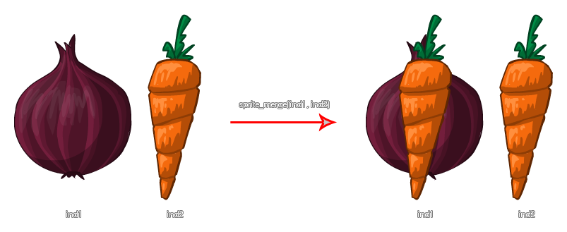

sprite_merge(ind1, ind2);
| Argument | Description |
|---|---|
| ind1 | The index of the sprite to merge. |
| ind2 | The index of the sprite that ind1 is to be merged with. |
Returns: N/A
This function will merge the sprite indexed in argument1 ("ind2") with that which is indexed in argument0 ("ind1"). This change is permanent, and from the moment you use this function until the game
is closed or the sprite deleted, the sprite that is being merged into will be changed, however the sprite that it is being merged with will remain the same, as illustrated below:

NOTE : Neither the image asset that is being merged into, nor the image asset that is for merging, can be one of the original game resources. You must use
sprite_duplicate first to create two new resources (if you are merging included game assets) and then merge those.
var tspr;
tspr[0] = spr_add(working_directory + "\Sprite Assets\explode1.png", 16, true, true, 0, 0);
tspr[1] = sprite_duplicate(spr_Explosion);
sprite_merge(tspr[0], tspr[1]);
sprite_index = t_spr[0];
sprite_delete(tspr[1]);
The above code loads a sprite into a local variable then merges it with another sprite that has been duplicated. Finally the merged sprite is assigned to the instance sprite_index while the loaded sprite is removed to free the memory it uses. Note that at some point after this operation, like in the Destroy or Room End events, you will also need to use sprite_delete to remove the merged sprite from memory too.